Unidade 1
Capítulo 1
Encontre soluções
Página 18
- Números racionais: 34,7; 591; 0,98; -0,32; 5,66;
 ; -14;
; -14;  ; 56.
; 56.
Números inteiros: 591; -14; 56.
Números naturais: 591.

- A idade do 5.º jogador é 23 anos.
- a) 0,7
b) -0,666...
c) -2,5
d) 0,073
e) 0,03
f) 0,2424...
g) 0,5
h) -0,333...
i) 0,25
j) -0,2
k) -0,1666...
l) 0,125 - a)

b)
c)
d)
e)
f)
g)
h) 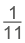 - a)

b) 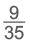 - b)
- c)
Capítulo 2
Encontre soluções
Página 23
- a)
b)23
22
21
20
2-1
2-2
2-3
8
4
2
1


1
5
25
125
- a) 49
b) 10 000
c) 1
d) 1
e)
f)
g) 81
h)
i)
j) 169
k) 512
l) 0,34 - a) 38
b) (0,2)12
c)
d) (-9)8
e) 107
f) (1,3)-2
g)
h) 115 - a)

b)
c) 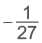
d) 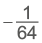
e)
f)
g)
h) 100 - a) 29
b) 36
c) 44
d) 56
e) 25
f) 52
g) 310 - a) 210
b) 2-7
c) 35
d) 4-4
e) 5-4 - 256
- a) 810
b) - 648
Capítulo 3
Encontre soluções
Página 26
- a) 103
b) 10-2
c)10-4
d) 102
e) 104
f) 10-3
g) 10-6
h) 105 - a) 6 ∙ 10-3
b) 9 ∙ 103
c) 1,2 ∙ 102
d) 6,4 ∙ 10-2
e) 8,9 ∙ 10-4
f) 1,82 ∙ 106
g) 1,45 ∙ 105
h) 9,63 ∙ 10-4 - 9.46 x 1012 km
Encontre soluções
Página 29
- 19
- a) 32
c) 54
d) 43 - 324 e 361.
- Lajotas de 40 cm de lado; 225 lajotas.
- 402 m
- a) 28
b) 36
c) 42 - 66 m
- a) 32 cm
b) 4 cm e 16 cm2.
Encontre soluções
Página 30
- a) 1,7 e) 5,9
b) 2,6 f) 8,4
c) 3,2 g) 10,2
d) 5,2 h) 11,7 - a) 3,9 c) 2,9
b) 11,6d) 6,6
Encontre soluções
Página 31
- a)

b) 
c)
d)
e) 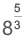
f)
- Resposta pessoal.
Relembre
Página 33
- c)
- -46
- c)
Unidade 2
Capítulo 1
Encontre soluções
Página 40
- a)
b)


Elas se cruzam em um único ponto.

- Para traçar a altura, devemos traçar uma reta com origem nos vértices e perpendicular ao lado oposto. No triângulo retângulo, o ponto de encontro das alturas coincide com o vértice do ângulo reto e no triângulo obtusângulo o ponto de encontro é externo ao triângulo.
Triângulo retângulo

Triângulo obtusângulo
- a) a e d; b e d.
b) a e b.
c) c e d são transversais em relação à a e b.
Capítulo 2
Encontre soluções
Página 45
- a)

b)
c)
- a) 180°
b) 30°
c) 132°
d) 62° - a) 105°
b) 52°
c) 275°
Capítulo 3
Encontre soluções
Página 51

Relembre
Página 54


- a) 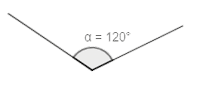
b)
c)
- Pentágono regular.
- a) 27°
b) 90°
c) 17°
d) 37°
e) 116°
f) 91°
Unidade 3
Capítulo 1
Encontre soluções
Página 59
- a) 3x
b) x + 35
c) 4x - 18
d) x - 1
e) x + 1
f) 2(x + 1)
g) 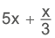 - a) 18 + x
b) 4m + 3n
c) 150 - a
Página 60
- a) 6a = 6 ∙ 5 = 30 cm
b) 2b + 7 = 2 ∙ 7 + 7 = 14 + 7 =
= 21 cm 
- 5,5 cm
- 60 batimentos cardíacos por minuto.
- a) 36
b) 9
c) 19
d) 3
e)
f)
Capítulo 2
Encontre soluções
Página 63

- a) 10xy, 2.º grau
b) 5ab2, 3.º grau
c) 4,8pq; 2.º grau
d) ; 6º grau
; 6º grau
e) 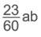; 2º grau
f) 9x2y3; 5º grau - -7ab3c
- a) 3xy; -18
b) 10x2y; -120
c)
Encontre soluções
Página 64
- a) -99x5y
b) - 56a4b4
c) 24a2x4
d) - p3q6
e)
f)
g)
h) -0,08x3y2z5 - a) 169x2y2
b) 35abc - 6m3n
- a) -25a2b2
b) 56x3y2
c)
d) 3x3
e) -9m2
f) 74y2z - a) 6abc
b) 63x2 - a) Comprimento: 6y;
Altura: 3y.
b) y2
c) 18y2
d) 9y2
e) 6y ∙ 3y
Encontre soluções
Página 65
- a) -11bc
b) 9x2y2
c) 72m4n2p
d) -9xy
e) 0,45b3c3
f)
g) -12y
h) 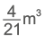 - 15x2y2
- 13xy
- 14x3y2z
- 6y
Encontre soluções
Página 66
- a) 49x4
b) -125a3b9
c) 81x8y12
d) -a5b5c10
e) 1,96x4y2z8
f) 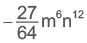 - a) 625x4y2
b)-1 000m15n3p6
c) a8b12
d) 32x5y10 - a) 343x3
b) 45ab2
Capítulo 3
Encontre soluções
Página 69
- a) 2y4 - 2y - 5
b) -12ab - 9b
c) 10x2 - 3x - 12
d) -20b + 9c
e) 9xy - 13x + 15y
Página 70
- a)Figura I: 4x + 4;
Figura II: 10x - 6;
Figura III: 14x + 8;
Figura IV: 15x - 8.
b)Figura I: 24 cm;
Figura II: 44 cm;
Figura III: 78 cm;
Figura IV: 67 cm. - a) -3y2 + 2y - 6
b) y2 + 4y - 1
c) -4y2 - 2y - 5
d) -3y2 + 3y
e) -y2 - 2y + 13
f) -3y2 + y - 12
g) 5y2 + 3y - 14
h) 5y2 + 4y - 8
Encontre soluções
Página 71
- a) 4x + 8
b) 7y3 - 28y
c) -5b5 - 6b3
d) 11x5 - 55x3 + 88x
e) 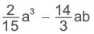
f) 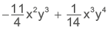
g) 3x + y - 8
h) 4m6 - 8m5 + 4m7
i) 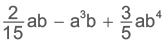 - a) -4x2 + 13x - 10
b) -4x2 - 23x + 35
c) -3x2 + 18x - 24
d) 36x - 45
e) -3x2 - 18x + 21
f) 36x - 45 - 5x2 + 11x + 5
- a) x2 + 5x + 6
b) b4 + 2bc - 5b3 - 10c
c) y8 - 9
d) a2b - ab2 + a - b
e) -3xy2 + 13xy - 4x - a) x2 + 8x + 16
b) 81 - 18b + b2
c) 9y2 + 30y + 25
d) x3 - 3x2y + 3xy2 - y3 - 2x3 + 7x2 + 8x + 3
- Área e perímetro da figura.
Encontre solução
Página 72
- a) 3x2 - 2
b) y3 + 6y
c) b6 - b4 - b2
d) -11b2c3 - 3a3b
e) 9x5y4 - 11x2y5
f) -8m9n3 + 16 - 9x4y2 - 2
- a) -24x8y7 + 22x6y5
b) -48x8y7 + 30x6y5
c) 24x14y12 - 8x12y10
d) -18x2y2 + 12
e) 6x2y2 - 2
f) -12x2y2 + 10
Encontre solução
Página 75
- 25, 30, 35. n × 5
Página 76
- a) 7, 1, 8.
b) 64, 72, 80.
c) 63, 75, 79.
d) 12, 7, 2.
- a) 5 triângulos e 7 quadrados.
b) n + 1
- Resposta pessoal.
- Resposta pessoal.
Relembre
Página 79
- 45
- -18
- a) -55x2y - 17xy2
b) 11a2 - 16ab - 10b2
c) -2x3y5 + xy2 - b)
- c)
- a)
- a) -4x8 - 7y6 + 3x
b) 6x8 + 9y6 + 3x
c) -5x16 - 13x8y6 - 8y12
d) -15x9 - 24xy6
Unidade 4
Capítulo 1
Encontre soluções
Página 87
- a) Vermelho: 128 cm2;
roxo: 32 cm2; rosa: 8 cm2.
b) 210 cm2 - a) bc + 2c + 2ac + 2ab + 4a
b) 8a + 2b + 2c + 4
c) ► 188 cm2
► 64 cm
Página 88
- a) a2 c)

b) x2 + 6xd) 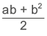 - Resposta pessoal.
- a) 2xy + 3y + 2x - 1
b) 48 cm2 - a) 68 m
b) I: 120 m2; II: 144 m2; III: 96 m2; IV: 96 m2.
c) Canteiro II.
d) Canteiros III e IV. - a2 + 2ab + b2
Página 89
- a)

b)►31,125 cm2
►15,375 cm2
c) 3x + 2y
d) ►22 cm
►15,5 cm - 3y2 + 2
- 10x2
- a) 5ab + b2
b) 39 m2
Capítulo 2
Encontre soluções
Página 91
- a) Não, porque cada cubinho utilizado como unidade-padrão pode ter até três faces (quadrados) aparecendo no cubo maior.
b) 27 unidades de volume. - 120 cubos A.
Página 92
- V = 83 = 512 cm3
- Aresta do cubo: a; área de cada face: a2; área total: 6a2.
- 159 litros
- 60 u.v.
- a) a3
b) a3 + 10a2 + 16a - Vsólido = 30x3
Página 93
- Vsólido = 28x2 + 40x
- 56x3 - 84x2 + 42x - 7

- 2x3 + 10x2
- Resposta pessoal.
Página 95
- 1 m³ = 1 000 litros.
- 36 litros.
- A água transbordará, pois, a capacidade da caixa é de 24 litros.
- Resposta pessoal.
Relembre
Página 97
- 30 cm2
- c)
- a)
Página 98
- d)
- c)
- b)
- a)
Página 99
- d)
- a)
- d)
- d)
- c)
Unidade 5
Capítulo 1
Encontre soluções
Página 105

Página 106
- a) 120º
b) 135º
c) 140º - a) Dodecágono.
b) Icoságono. - a) 1 980º
b) 2 700º - a) x = 135º
b) x = 72º; 72°, 144°, 144°, 72°, 144° e 144°. - 18 lados
- a) Pentágono: 108º. Quadrilátero (losango): 36º e 144º.
b) Hexágono: 120º. Quadrilátero (losango): 60º e 120º. - a) Medidas dos ângulos: 45º, 45º e 90º.
b) Medidas dos ângulos: 22º 30’, 67º 30’ e 90º.
c) Medidas dos ângulos: 36º, 54º e 90º. - a) Medidas dos ângulos: 30º, 60º, 120º e 150º.
b) Medidas dos ângulos: 60º, 80º, 100º e 120º.
c) Medidas dos ângulos: 42º 30’, 85º, 105º e 127º 30’. - x = 110º e y = 150º
Página 107
- 80º
- c)
- Perímetro: 696 m.
 = 80º,
= 80º,  =
=  =
=  =
=
= 60º e EÂB = 128°.
Encontre soluções
Página 109
- a) 45º
b) 36º
c) 30º
d) 20º - ai = 156º; pentadecágono.
- Icoságono; ai = 162º e ae = 18º.
- Quadrilátero; 90º.
- 720º
- β = 36º
- 720º
- 40º, 60º e 80º.
- 132º
Página 110
- Octógono.
- Hexágono.
- a = 72º
- Resposta pessoal.
Capítulo 2
Página 113
- a) 20 diagonais.
b) 35 diagonais.
c) 54 diagonais.
d) 104 diagonais.
e) 135 diagonais.
f) 209 diagonais. - Pentágono.
- 170 diagonais.
- 77 diagonais.
- 11 lados.
- 34.
- Octógono.
- Pentadecágono,
pois n - 3 = 12 → n = 15.
90 diagonais. - 135 diagonais.
- Polígono regular de 17 lados.
- a) 5 triângulos.
b) 900º
c) 14 diagonais.
Relembre
Página 116
- d)
- 52º, 40º e 88º.
- b)
- 360º
- d)
- c)
- 5 diagonais.
- e)
Página 117
- c)
- a)
- c)
- d)
- 90º
- d)
- b)
Unidade 6
Capítulo 1
Encontre soluções
Página 122
- a) x ≠ 0d) x ≠

b) x ≠ -9e) x ≠
c) x ≠ 5 - a)
 b)
b) 
- a)
 b)
b) 
Página 123
- a) 3xy3
b)
c)
d)
e)
f) - a) x - 2f) 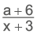
b) g)
c) x + 5h)
d) i) 2y(3 - 2x)
e) 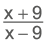j) a - b - a)
b)
c)
d)
- a) 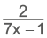
b) 6 - x
c) - b)
- d)
Capítulo 2
Encontre soluções
Página 127
- a) a2b3
b) 6x3y2
c) 70a3b2c2
d) x4y2z3 - a) 2x(x - y)
b) 4x2y(x3 - 7)
c) 15a3b(x3 - 12) - a) x(x - 2)(x + 2)
b) (x - 7)2
c) 3(x - 9)2
d) (a - 1)(a + 1)2
e) 2(y - 2)(y + 2)2
f) 3m2(m + 5)(m - 5)2
Encontre soluções
Página 128
- a)

b)
c)
d) 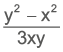 - a)

b)
c)
d)
e)
f) 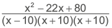
g)

- 1

Encontre solução
Página 130
- a)
 c)
c) 
b) d)
d) - a)

b)
c) 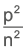
d) 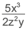 - a) 3b2
b)
c)
d)
e) 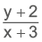
f)
g) a
h)
Página 131
- a)
b)
c)
d) 1
e) 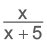
f)
g) - a) xy
b) -b
c)
d) x - y
e) y6
f) 7
g) 3
h)
i)
j) - c)
- a)
Capítulo 3
Encontre soluções
Página 133
- O comprimento mede 16 m e a largura 12 m.
- 22, 28 e 38.
- R$ 56.000,00
- R$ 332,00
- a)

b)
c) S = {-2} - 1.º sorteado: R$ 28.000,00;
2.º sorteado: R$ 14.000,00;
3.º sorteado: R$ 7.000,00. - a) O total de maçãs repartidas foram 120.
b) Ele tem 60 anos de idade.
Encontre soluções
Página 136
- a) S = {-26}
b) S = {5}
c) S = {2}
d) S = {-1}
e) S = {5}
f) S = - a) S = {0}
b) S = {6}
c) S = {-4}
d) S =
e) S =
f) S = {5}
g) S = {Ø} - 44 famílias.
- 8 horas.
- Sábado: 15 garçons;
domingo: 13 garçons; R$ 24,00. - Copos: 9 caixas; pratos: 7 caixas.
Página 137
- a =

- a) 7 pessoas.
b) R$ 8,00
Encontre soluções
Página 138
- a) A =

b) h =
Página 139
- y = 50 + 35x
- a) S = {-3m}
b) S =
c) S =
d) S = {2}
Encontre soluções
Página 141
- a) a, c, d, e.
- a) Exemplos de respostas: (0,-2); (1, 0) e (2, 2).
b) Sim.
c) Não.
d) Não, pois (1, 0) indica que
x = 1 e y = 0; e (0,1) indica x = 0 e y = 1.

Capítulo 4
Encontre soluções
Página 146
- e)
- d)
- a)
- b) e c).
Relembre
Página 151
- a) 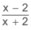
b) x - 1
c)
d) x - c)
Página 152
- a)
- c)
- b)
- d)
- b)
Página 153
- a)
- d)
- a)
- a)
- No monte, há 18 mangas.
Unidade 7
Capítulo 1
Página 160
- a) É possível.
b) É possível.
c) É possível.
d) Não é possível. - a) Não representam as medidas dos lados de um triângulo, pois 10 > 4 + 5.
b) Representam as medidas dos lados de um triângulo, pois
5 < 11 + 8, 11 < 5 + 8 e 8 < 11 + 5.
c) Não representam as medidas dos lados de um triângulo, pois 13 > 7 + 4.
d) Representam as medidas dos lados de um triângulo, pois
8 < 9 + 10, 9 < 8 + 10 e 10 < 8 + 9. - a) x = 39º
b) x = 53º
Página 161
c) x = 35º
- a) x = 108º
b) x = 130º
c) x = 30º
d) x = 33º - Ângulo interno = 45°; ângulo
externo = 135°. - 47º
- b)
Encontre soluções
Página 163
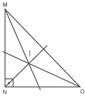
- 120º
Página 164
- a) x = 50º
b) x = 30º
c) x = 40º - 60º
- 81º
- 120º
- 120º
- 64º, 64º e 52º.
- c)
Encontre soluções
Página 166

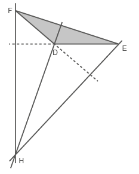

a) Triângulo obtusângulo.
b) Triângulo retângulo.
- a) y = 26º e x = 48º.
Página 167
b) y = 118º e x = 24º.
- 72º, 72º e 36 .
- 65º
Página 168
- a)

b)

- a) 18 cm
b) 20 cm
Página 171
O ponto equidistante aos três vértices é o centro da circunferência circunscrita.
- a)
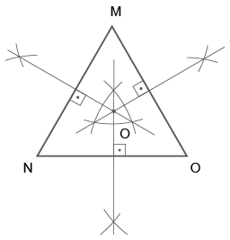
b)

Encontre soluções
Página 174
- Sim, pelo caso ALA.
- x = 5 e y = 10.
Página 175
- a) LAL
b) LAA0
c) Cateto-hipotenusa.
d) ALA
e) LLL - a) Verdadeira.
b) Falsa. Todo triângulo isósceles possui 2 lados congruentes, isso não significa que ele será congruente a outro.
c) Verdadeira.
d) Falsa. Todo triângulo equilátero possui 3 lados congruentes, isso não significa que será congruente a outro triângulo.
e) Verdadeira. - A e E: ALA.
B e D: LLL.
F e G: cateto-hipotenusa.
Capítulo 2
Encontre soluções
Página 179
a) M, N, O e P.
b) MN, NO, OP e PM.
c) M, N, O e P.
d) MO e NP.
- x = 63º. Os ângulos são 126º, 95º, 103º e 36º.
- a) F
b) V
c) V
d) V
e) V
f) F - a) 23º
b) 49º - 142º
Encontre soluções
Página 183
- 22 cm
- MO = 9 cm e NO = 3 cm.
Página 184
- x = 16
- x = 10 cm e y = 8 cm.
- x = 54º
- 63º, 63º, 117º e 117º.
- x = 22º. As medidas dos ângulos são 58º, 58º, 122º e 122º.
- 54º, 54º, 126º e 126º.
- 67º, 67º, 113º e 113º.
Relembre
Página 186
- d)
- d)
Página 187
- c)
- d)
- 10 cm
- c)
- b)
- b)
- c)
- d)
Unidade 8
Capítulo 1
Encontre soluções
Página 191
- a) e d).
- a), b) e d).
- (1, 4);
- e)
- Balança A: 2x + 3y = 11;
Balança B: x + 5 = 10 + 2y.
Capítulo 2
Encontre soluções
Página 195
- 90 bolas brancas e 30 vermelhas.
- 10 coelhos e 8 galinhas.
- Júlia tem 28 anos e Débora 20.
- 57 cm e 93 cm.
- a) S = {(-1, 3)}
b) S = {(3, -5)}
c)
d)
e)
- 31 cédulas de 10 reais e 19 cédulas de 5 reais.
- 17 e 23.
Página 200
- 42 laranjeiras e 24 limoeiros.
- 8 e 11.
- 22 chilenos e 110 brasileiros.
- a) S = {(13, 10)}
b) S = {(-2, -3)}
c) S = {(-1, 6)}
d) S = {(2, 5)}
e) S = {(-3, -4)} - 120 peças de fitas amarelas e 60 peças de fitas vermelhas.
- 144 homens e 96 mulheres.
- Resposta pessoal.
Capítulo 3
Encontre soluções
Página 202
- x² + 6x - 160 = 0
- a) a = 4, b = -12 e c = 9
b) a = 3, b = 81 e c = 0
c) a = -5, b = 18 e c = 3
d) a = -4, b = 0 e c = 32
e) a = -14, b = 7 e c = 18
f) a = -1, b = 0 e c = -1
g) a = 1, b = -8 e c = 0
- a) -x² + 10x - 18 = 0, completa.
b) 2x² + 8 = 0, incompleta.
c) -4x² + 15x = 0, incompleta.
d) 4x² - 12 = 0, incompleta.
e) 8x² - 4x - 40 = 0, completa.
- a) -4x² + 15x + 10 = 0
b) x² - 16 = 0
c) 7x² + 6x - 9 = 0
d) 2y² - 10y + 48 = 0
e) 24x² - 15x - 10 = 0
f) -x² + 13x + 2 = 0
Encontre soluções
Página 204
- a) S = {-5, 5}
b) S = {-3, 3}
c) S = {-9, 9}
d)
e) S = {-30, 30}
f) S = {-6, 6}
g)
h) S = {-4, 4}
- a) S = {0, 1}
b) 
c) S = {0, 1}
d)
Página 205
e) S = {0, 11}
f)
g) 
h) S = {0, 5}
- Resposta pessoal.

- Existem diversos aplicativos, como por exemplo: Tiger Algebra, Symbolab, Mathway, Mathforyou, Geogebra, etc.
- c)
- d)
Relembre
Página 209
- a) S = {(-2, -5)}
b) S = {(6, -2)}
c) S = {(-7, 3)}
d) S = {(1, 1)}
e) S = {(2, 1)}
f) S = {(2, 2)}
g) S = {(-3, -5)}
h) S = {(4, -2)}
i) S = {(6, 18)}
j) - b)
- e)
- 92 pontos.
- Lápis: R$ 3,50; Caneta: R$ 4,80.
- 42 anos.
Unidade 9
Capítulo 1
Encontre soluções
Página 213
a) O
b) OA, OC, OD e OF.
c) AB, AF, BF, EF e CD.
d) AF e CD.
- a) 7,5 cm
b) 16 cm - a) Isósceles, pois dois de seus lados apresentam a mesma medida, que corresponde à medida do raio.
b) Triângulo retângulo.
Página 214
- a) Resposta pessoal.
b) 8 m
c) 7 m
d) 15 m
Capítulo 2
Encontre soluções
Página 219
- a) Tangentes internamente.
b) Secantes.
c) Tangentes externamente.
d) Externas.
e) Tangentes internamente.
f) Secantes.
g) Externas.
h) Tangentes externamente. - Retas tangentes: a e f.
Retas secantes: c e e.
Retas externas: b e d. - y = 48º
- 32,4 cm
- a) 16 = 10 + 6, portanto, as circunferências são tangentes externamente.
b) 10 - 6 < 8 < 10 + 6, portanto, as circunferências são secantes.
c) 20 > 10 + 6, portanto, as circunferências são externas. - 45º
Capítulo 3
Encontre soluções
Página 221
- a) 165º
b) 105º
c) 195º
d) 255º - a) x = 65º
b) x = 30º - a) 36º
b) 18,84 cm
c) 1,884 cm - 150º
- 280º
Encontre soluções
Página 223
- x = 24º, med (
 ) = 48º
) = 48º
e med ( ) = 96º
) = 96º - x = 62º, y = 124º e z = 28º.
Página 224
- a) x = 37º
b) z = 45º e y = 33º.
c) y = 71º
d) x = 35º e z = 21º. - a) med (
 ) = 180º
) = 180º
b) med ( ) = 90º
) = 90º
c) Triângulo retângulo.
d) Sim, pois a medida de qualquer ângulo inscrito em uma semicircunferência é igual a 90º. - c)
Relembre
Página 227
- b)
- d)
- c)
- b)
- a)
- c)
- d)